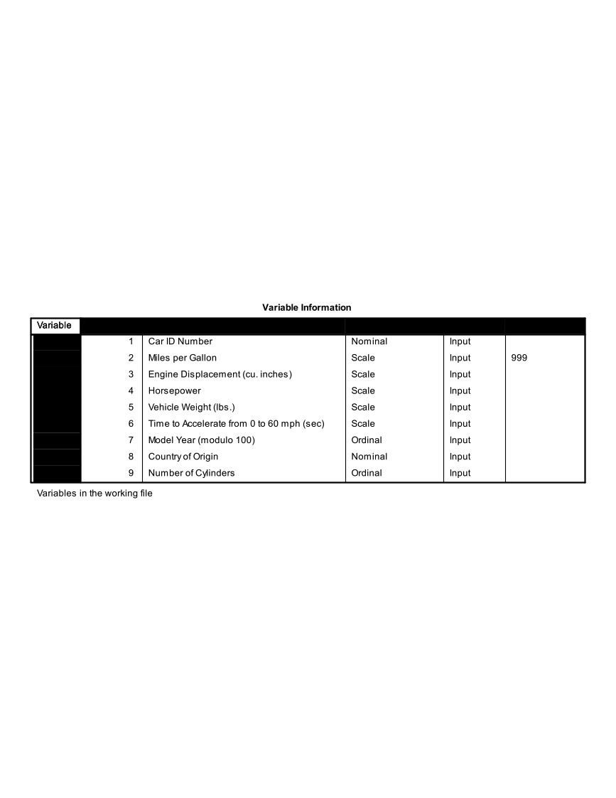

Chapter 17 Final Project
The Data (Refer to Final Project Folder)
The cars data sets contain data on specifications of 406 vehicles from 1970 to 1982. Among the variables in the data set are information on fuel consumption (mpg), horsepower, weight, acceleration, origin (Europe, Japan, U.S.), and number of cylinders.
The data set contains categorical variables (such as origin), numerical discrete variables (such as number of cylinders), and continuous variables (such as weight, and acceleration).
Getting Started
Investigate cars_wave1.xls and cars_wave2.xls and prepare the data for SPSS
Open SPSS and import cars_wave1.xls and cars_wave2.xls from Microsoft Excel.
Merge cars_wave1 and cars_wave2 (add cases).
Save this new SPSS file!
Using the codebook below, define the proper attributes in Variable View


Working with Variables
Recode Origin such that 1=Domestic, 0=Foreign. Remember to recode into a different variable. Give this new variable the proper attributes in variable view.
Convert Miles Per Gallon (MPG) to Liters Per 100 Kilometers
Use the Compute function
The formula to use: LP100K=(100*3.785)/(1.609*MPG)
Export this SPSS data set to Microsoft Excel (it’s always good to have a back up!). Export all of the variables.
One Variable Procedures
Get descriptive statistics for all scale variables in the data set.
Get frequency tables for all categorical variables (ordinal or nominal) in the data set.
Create a histogram of Horsepower.
Create a histogram of Weight.
Create a QQ Plot for Weight (Analyze Descriptive Statistics QQ Plot Select Weight, leave others as default settings OK)
Create a bar chart for Origin.
Organize the output by Year (Analyzing groups of cases separately, compare groups). Before proceeding, select only cases with Year not = 0.
Investigate Horesepower (descriptive statistics)
Investigate Weight (descriptive statistics)
What do you see?
Remember to turn the Split File command off before proceeding!
Relationship Between Continuous Y (Horsepower) and Continuous X (Weight)
Create a Scatter Plot with Horsepower as the Y variable and Weight as the X variable.
Add a Linear fit line.
What is the relationship between Horsepower and Weight as shown in this graph?
Calculate the Pearson and Spearman Correlation coefficients for the relationship between Horsepower and Vehicle Weight.
What is the p-value for the Pearson correlation?
What is the actual p-value, as opposed to the p-value that is displayed? To display the actual p-value for the Pearson correlation, double-click on the Pearson correlation output table and double-click on the p-value. (Remember, p-values cannot actually be equal to zero. The p-value you will see displayed, after double-clicking, will be in scientific notation.)
Relationship Between Continuous Y and Numerical Discrete/Ordinal X
Before doing any analyses, select only cases with Year not = 0.
Create a side-by-side boxplot of MPG vs. Year. Choose MPG as the “variable” and Year as the “category axis”.
What is the general trend of MPG across years?
Relationship Between Continuous Y and Nominal X
Create a side-by-side boxplot of Miles per gallon vs Country of Origin (ORIGIN). (Note: even though Origin is numeric in the data set, its values are nominal: American, European, Japanese).
What is the general relationship between MPG and the Origin of the car?
Create a side-by-side Boxplot of Miles per gallon vs. the recoded Country of Origin (1=Domestic, 0=Foreign).
Final Steps
Export the SPSS output into Microsoft Excel
Select a few tables and/or charts that you would like to present and paste them into Microsoft Word